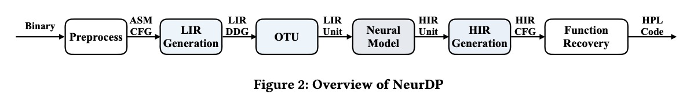
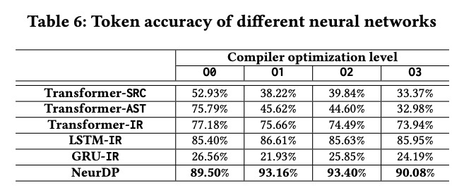
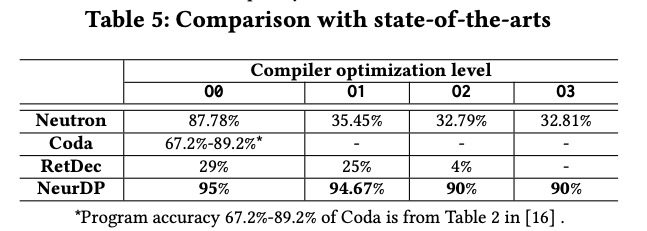
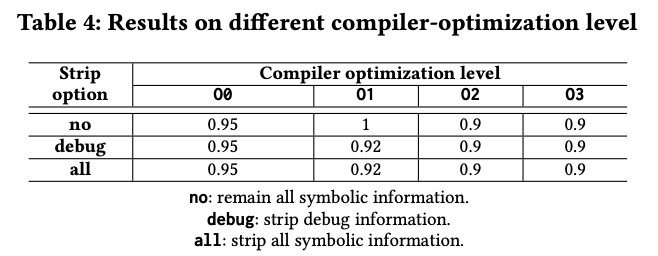

NeurDP
研究背景
近年来，神经网络在代码理解和逆向工程领域取得了广泛的应用。一些工作，例如著名的Github Copilot和CodeBERT等使用神经网络来学习源码的表示，在代码生成、补全和注释生成等方面取得了较好的效果。同样的，许多工作研究神经网络在二进制或汇编代码理解中的利用，从而帮助分析人员进行反汇编、恶意代码检测等。神经网络在程序分析和逆向工程中的应用大幅度帮助分析人员节省了时间成本。并且，和传统的方法相比，其速度通常较快，在有GPU的条件下可以很好的和下游任务模型进行结合，实现大批量快速的逆向工程和程序分析。
反编译器是逆向工程和程序分析中常用的工具，对于漏洞发现和恶意代码分析有重要作用。反编译过程可以看作是将低级程序语言翻译到和它功能等价的高级程序语言的过程。传统的反编译器的开发需要很多逆向工程师总结其程序分析经验，将其制定成规则，并结合程序分析技术来实现。著名的开源反编译器RetDec有上百个开发者曾为其贡献代码，并且开发多年，至今仍然不完善。
机器翻译模型在自然语言翻译的领域取得了重大进展。一些研究者受到自然语言翻译技术以及AI在代码领域中的发展的启发，开始探索使用端到端的机器翻译模型来将低级程序语言翻译成高级程序语言。这些方法尽管对于输入和输出进行了各种预处理，设计了各种模型结构，但是他们仍然无法解决优化后二进制的反编译问题。
研究困难
编译器优化在真实的项目中是广泛使用的。常用的GCC和Clang编译器都是默认开启O1级别的优化。编译器常常是两段式的结构，分为前端和后端，分别进行机器无关的优化和机器相关的优化。经过对编译技术的分析和实验，我们发现训练一个能处理优化后二进制代码的端到端的反编译模型非常困难。因为模型常常是数据驱动的，训练代码翻译模型需要高质量的低级语言和高级语言代码对。然而由于编译器优化策略，优化后的低级语言和高级语言在文本所包含的信息上常常难以对应，并且其结构差异很大。已有的神经网络反编译方法在解决优化问题上主要存在两个难点：
1）编译优化策略通常大幅度改变源码的结构。这种修改不仅体现在指令类型等层面，更多的是结构上的改变，有一些优化策略甚至会提前对一些语句进行运算，预测其结果，例如常量传播。这种改变会导致源码中有很多冗余的文本，其语义在二进制代码中本身就不存在。端到端的训练需要学习优化策略，例如上文提到的算术运算，训练这样的模型是很困难的。
2）对低级程序语言（二进制文件）和高级程序语言（源码文件）进行划分，并形成准确的对应关系是不容易的。以往的工作通常使用函数或者基本块进行划分，但是函数和基本块内的语句数量是没有上限的，对于较大的基本块或函数，模型很难对其进行翻译。根据调试信息划分面临着和难点1一样的问题。而如果设置最大窗口顺序划分指令序列，又会面临对应不准确的问题。
整体设计
NeurDP主要解决当前基于神经网络的反编译方法无法解决优化后二进制反编译的问题。其中预处理部分对LPL进行一些静态分析，包括SSA形式转换，和一些简单的寄存器传播生成低级中间语言LIR。OTU是方法的核心部分，根据数据依赖关系将LIR和HIR划分为更小且可以准确匹配的代码片段。HIR是基于LLVM IR简化版本的高级中间语言。NeurDP模型部分使用图神经网络GNN学习LIR的数据依赖图，并生成HIR指令序列。HIR Generation对生成的指令序列操作数进行识别和填充。最终，结合函数的参数、返回值以及控制结构，并使用规则将HIR转换为HPL，从而生成高级语言函数。

为了解决困难1，本方法使用中间表示IR作为连接LPL和HPL的桥梁。IR经过了编译器前端优化，因此其文本上包含的信息和结构与LPL更加的接近。而从IR到HPL通过制定规则可以很容易实现。因此，我们选择用模型去完成从LPL到IR的翻译。
为了解决困难2，本方法设计了一种基于数据依赖图的切分方式，将基本块切分成更小的代码片段。基于我们的分析，绝大多数的优化策略都是基于数据流分析的。优化策略通常不会改变基本块的输入和输出的对应关系。两个不同输出在数据依赖图中的子图存在重叠部分和独立部分。考虑到对一个输出的优化不能对另一个输出的结果产生影响，优化往往是在这些重叠或独立部分的内部发生的。因此，这些子图在HIR和LIR中可以较准确地进行对应。我们按照这个原则对LIR和HIR的基本块进行划分，获得更细粒度且对应准确的LIR-HIR代码片段对作为训练集。
实验效果
我们测试了其他网络在使用源码，AST和IR时代码翻译的表现和NeurDP进行对比，结果如下表。可以看到使用IR之后普通的序列模型准确率也有大幅度地提升。NeurDP使用图神经网络对输入进行编码，效果比其他序列模型更好。

我们测试了使用不同的基本块切分方式的代码翻译的表现，结果如下图，可以看到基于数据流的划分方式比顺序滑动窗口效果明显提升。而使用我们的OTU比普通的数据流的窗口效果更好。

为了验证NeurDP对优化后代码的处理能力，我们将他与其他两个神经网络反编译工作Neutron和Coda以及著名的开源反编译工具RetDec在clang的O0-O3优化级别下的准确率进行了对比，结果如下表。可以看到NeurDP效果比其他工具都好，并且对于不同优化级别的代码，NeurDP的表现差异较小。RetDec由于其功能还不完善，出现了很多函数无法识别的错误。

Strip是一个从二进制中去掉调试和符号信息的工具，会增加反编译的难度。我们对比了在保留所有调试和符号信息、去掉调试信息和去掉所有调试和符号信息的条件下，NeurDP在O0-O3三个优化级别上的表现。结果如下表，可以看到NeurDP在去掉符号信息的情况下也表现良好。
我们测试使用的数据集公开在了https://github.com/zijiancogito/neur-dp-data 。